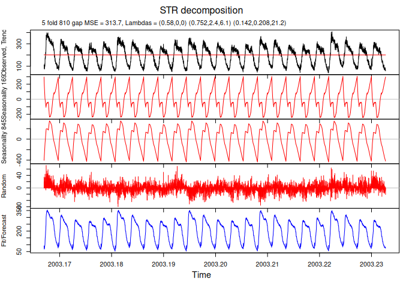

The goal of stR is to provide two methods for decomposing seasonal data: STR (a Seasonal-Trend decomposition procedure based on Regression) and Robust STR. In some ways, STR is similar to Ridge Regression and Robust STR can be related to LASSO. They allow for multiple seasonal components, multiple linear covariates with constant, flexible and seasonal influence. Seasonal patterns (for both seasonal components and seasonal covariates) can be fractional and flexible over time; moreover they can be either strictly periodic or have a more complex topology. The methods provide confidence intervals for the estimated components. The methods can also be used for forecasting.
Installation
You can install the release version from CRAN.
install.packages('stR')You can install the development version from GitHub.
# install.packages("remotes")
devtools::install_github("robjhyndman/stR")Example
For most users, the AutoSTR() function will be the preferred way of using the package.


See the vignette for more advanced options.